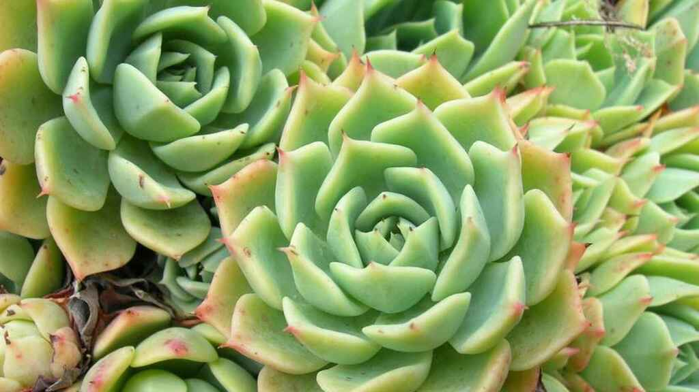
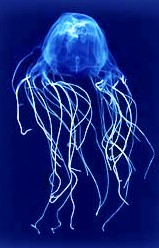
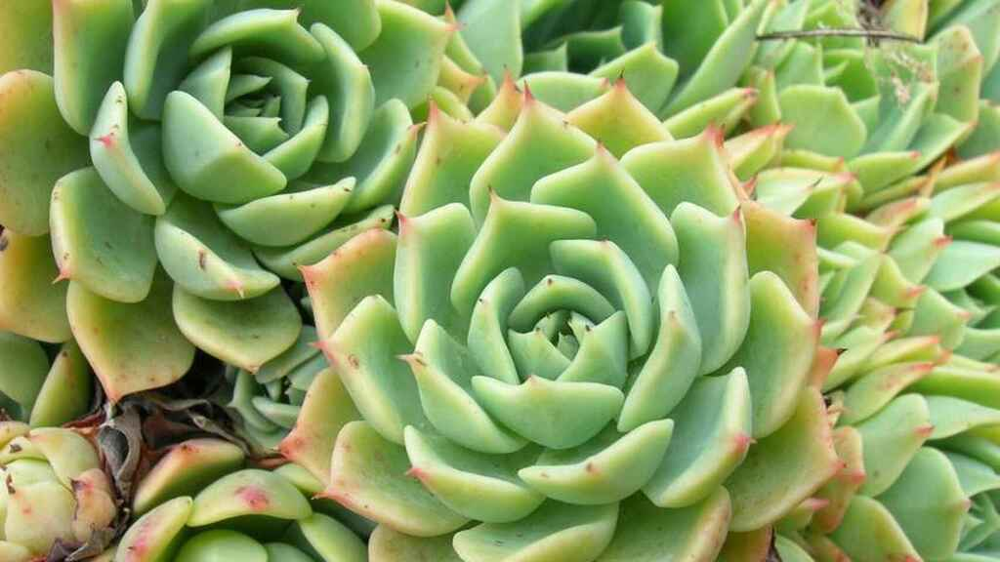
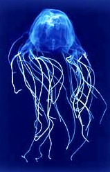

 |
|
 |
|
EL MEDIOAMBIENTE:
El medio ambiente, medioambiente o entorno natural abarca todos los seres vivos y no vivos que interaccionan naturalmente, lo que significa que en este caso no es artificial. El término se aplica con mayor frecuencia a la Tierra o algunas partes de la Tierra. Este entorno abarca la interacción de todas las especies vivas, el clima, y los recursos naturales que afectan la supervivencia humana y la actividad económica. Se pueden distinguir como componentes del medio ambiente:
En contraste con el entorno natural es el ambiente construido. En áreas donde el hombre ha transformado fundamentalmente paisajes como los entornos urbanos y la conversión de tierras agrícolas, el entorno natural se modifica enormemente en un entorno humano simplificado. Incluso los actos que parecen menos extremos, como la construcción de una choza de barro o un sistema fotovoltaico en el desierto, el entorno modificado se convierte en uno artificial. Aunque muchos animales construyen cosas para proporcionar un mejor ambiente para ellos mismos, no son humanos, por lo tanto, las presas de los castores y las obras de las obras de las termitas, termiteros o monticulos, se consideran naturales.
Las personas rara vez encuentran ambientes absolutamente naturales en la Tierra, y la naturalidad generalmente varía en un continuo, desde el 100 % natural en un extremo hasta el 0% natural en el otro. Más precisamente, podemos considerar los diferentes aspectos o componentes de un entorno, y ver que su grado de naturalidad no es uniforme. Si, por ejemplo, en un campo agrícola,la composicion mineralogica y la estructura de su suelo son similares a las de un suelo de bosque no perturbado, pero la estructura es bastante diferente.
El término medio ambiente se usa a menudo como sinónimo de hábitat, por ejemplo, cuando se dice que el ambiente natural de las jirafas es la sabana.